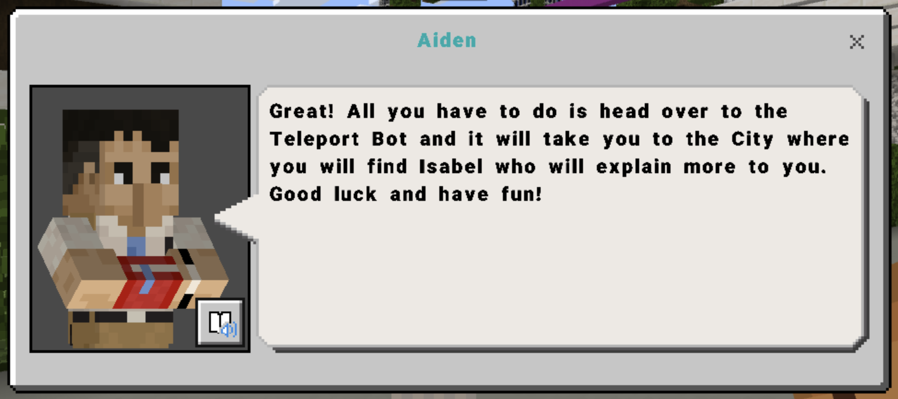
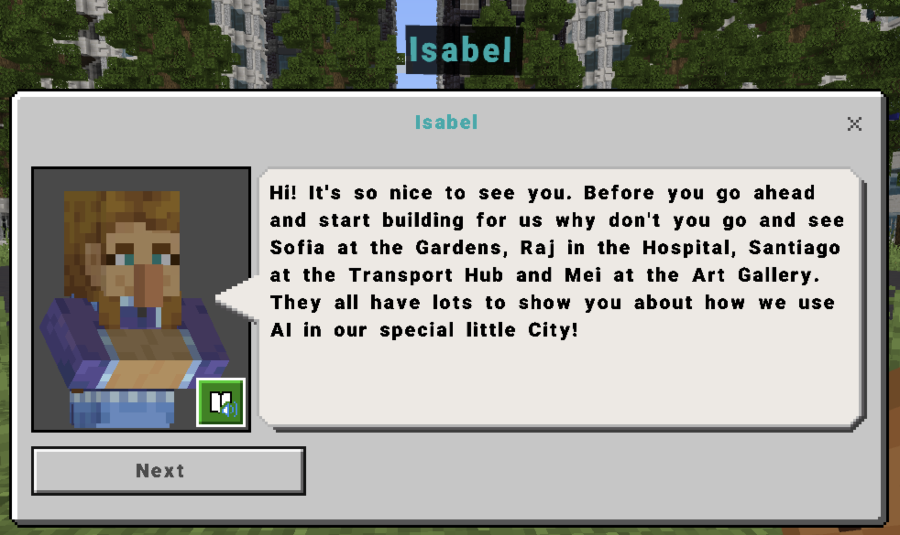
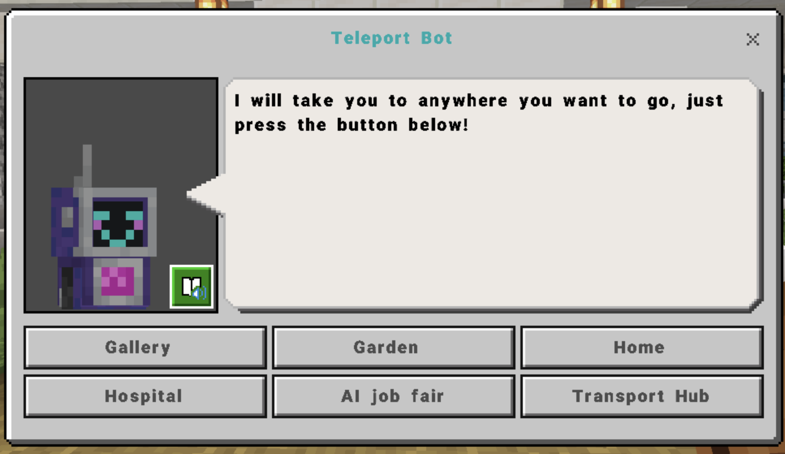
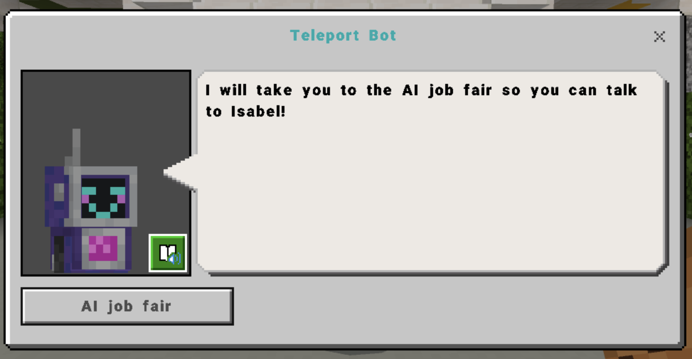
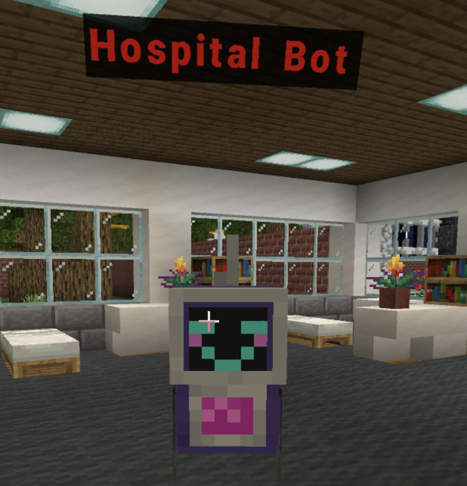
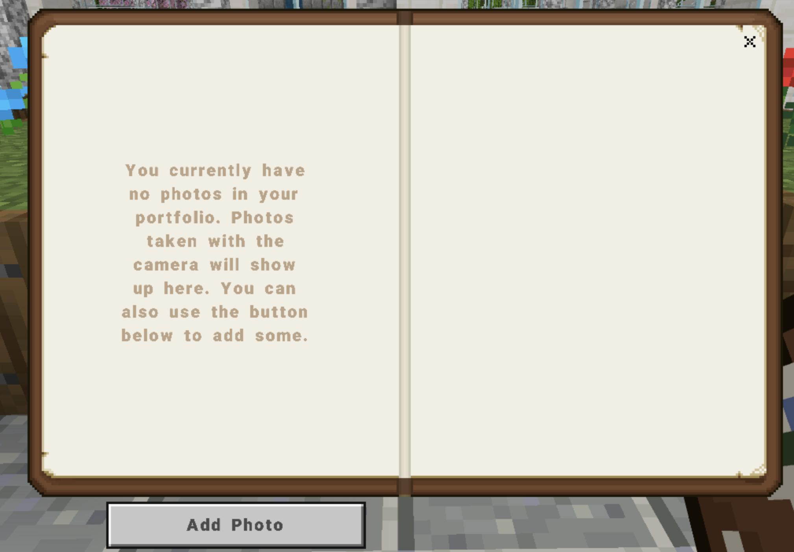
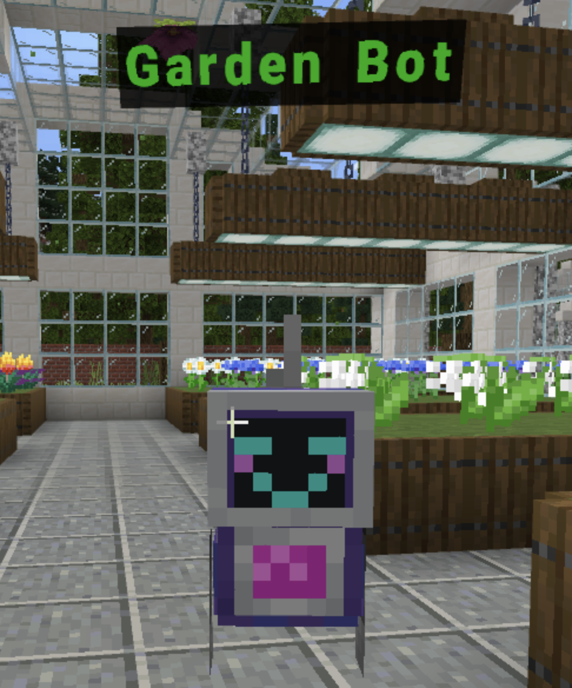
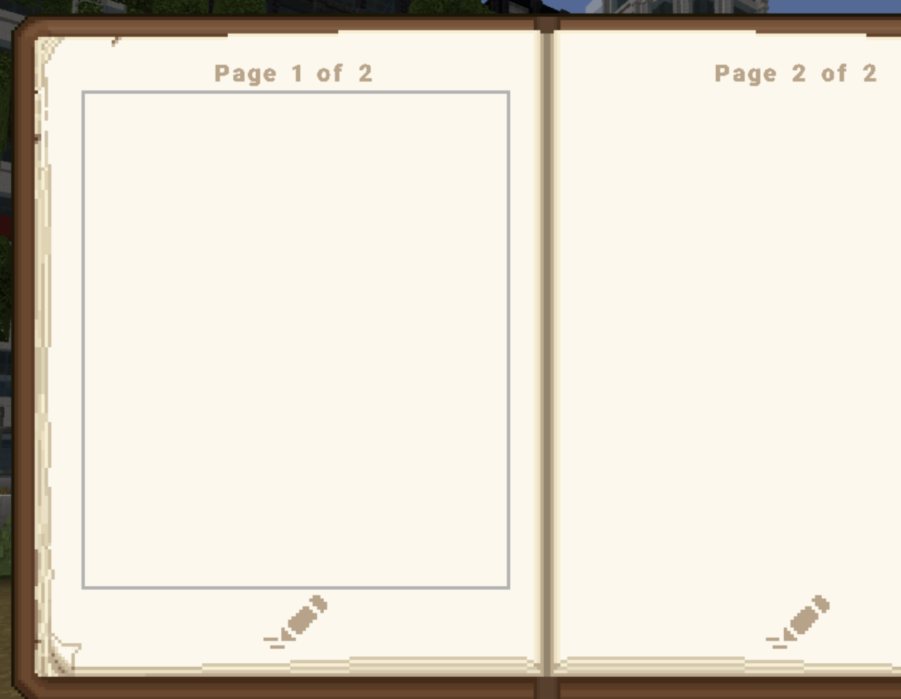
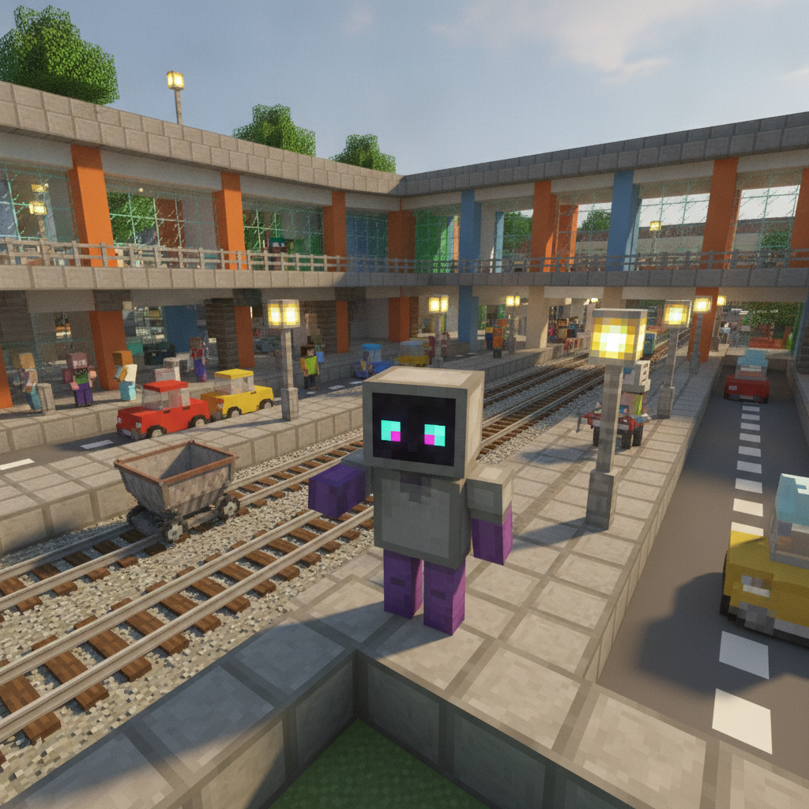
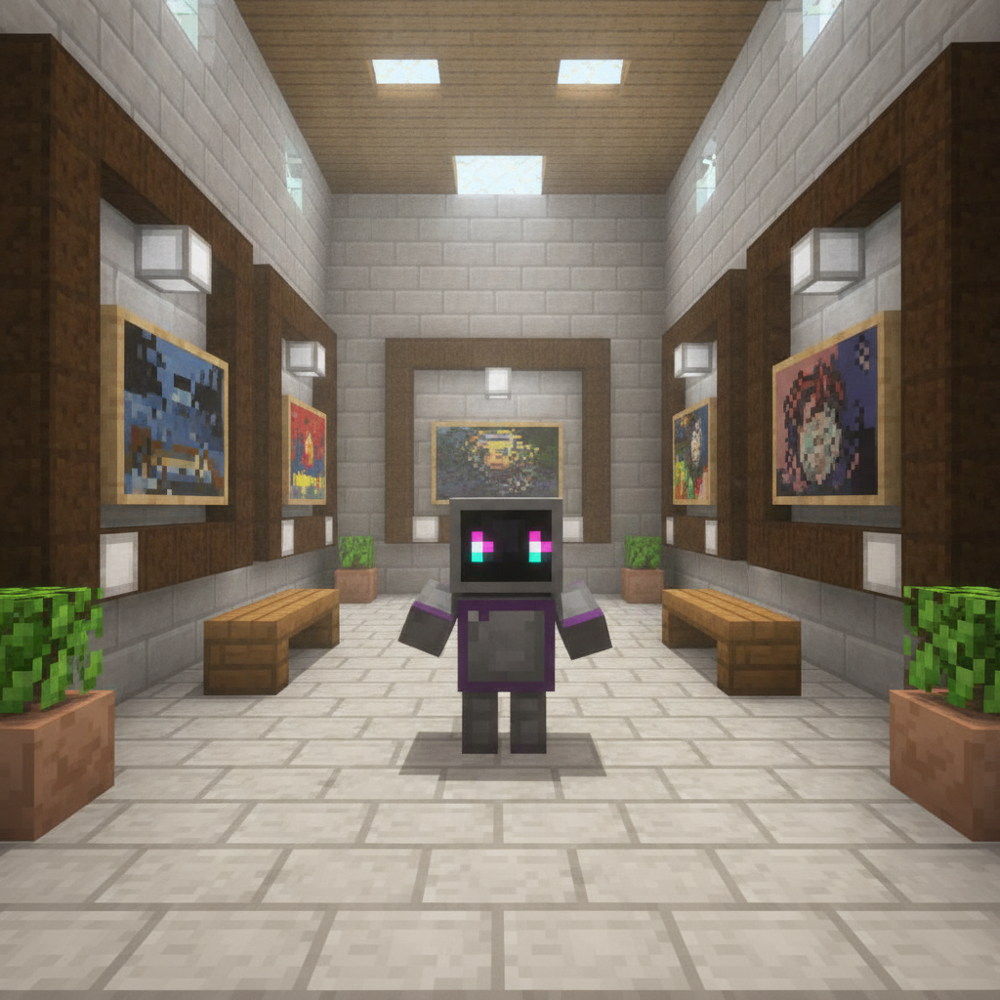

Explore the city. Discover how A.I. helps people do their jobs.
A job fair is opening in the city. Before it opens, Aiden wants YOU to explore and discover how A.I. helps everyone who works there.




Walk up to a Teleport Bot, click it, and press the button for where you want to go. You can also grab a car!


Use the camera, then open your Portfolio. Give each photo a clear name that says what the A.I. does.
"Medication Dispensing Bot" ✔

Talk to Sofia. Read the board. Find the Garden Bot. What ONE job does it do?
📷 "Plant Watering Bot"

Find the Book & Quill in your hotbar. Write 1 to 2 paragraphs:
"How is the world around us using A.I. to help people do their jobs better?"
Use examples from at least 3 stations. Then Sign and Export.
Name all 5 stations
+ write your quill reflection
Talk · read the board · snap · name · then explain it in the quill.

Transport Hub
Art GalleryEach one has a person, a board, and a Bot with a job.
🎟 Exit Ticket: read one sentence from your quill reflection aloud.
You found A.I. helping all across the city — in hospitals, gardens, transport and art.
The A.I. Job Fair · Year 5 + 6